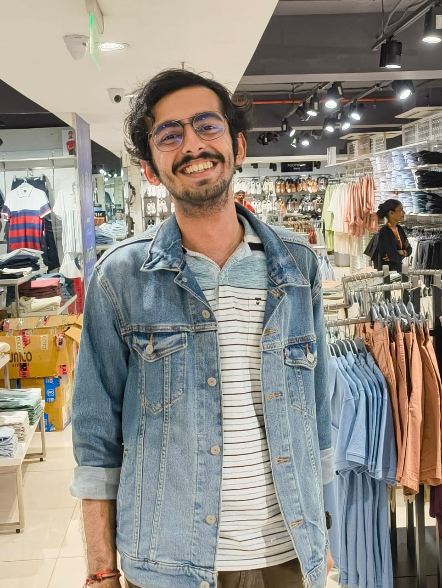

Hi, I’m Vinay.
I’m an undergraduate at BITS Pilani, Goa working at the intersection of deep learning, AI hardware, and high-performance computing. I enjoy understanding systems from first principles: how models are built, how they hit the GPU, and how to make that entire path faster and more reliable. And most importantly, I love to explore and play around with lots of stuff in tech.
Lately I’ve been working on MoE expert placement for batched decode, training-free token halting for long-context LLMs, and benchmarking and telemetry tooling for LLM serving.
vinayrjumani@gmail.com · github.com/Vinay12345-neutron · linkedin

BITS Pilani, Goa Campus
Static per-expert placement in llama.cpp that keeps hot experts on the GPU and runs cold experts in place on the CPU. Up to 1.34× end-to-end speedup at B=4 on Qwen3-30B-A3B.
Closed-form K/V transport for intermediate-layer token halting: 89.1% of dense LongBench quality at 89% of prompt tokens halted, with 1.50× prefill speedup.
Energy-aware GPU autotuning framework with learned performance models to guide configuration search.
Decoding EEG signals into language space using LLMs, focusing on cognitive representations and neural-linguistic alignment. Deep learning pipelines for EEG preprocessing, time-frequency transforms, and multimodal embeddings.
Co-architected a Python text-to-SQL pipeline (schema retrieval, ambiguity resolution, SQL generation, execution) for enterprise databases.
Exploring GPU-Direct Storage, HDF5 extensions and parallel I/O for large-scale ML training. Profiling bandwidth, PCIe usage and CPU-GPU transfer bottlenecks.
Benchmarking and profiling suite for SGLang: chat, long-context RAG, shared-prefix and agentic workloads, with a resumable 96-experiment matrix and GPU telemetry.
Engine-agnostic harness correlating TTFT/TPOT, scheduler metrics and GPU/NVML telemetry to characterize near-OOM serving.
Implemented the FlashAttention-2 algorithm (Tri Dao et al.) for efficient transformer training, inspired by OpenAI's Fused Attention work. Focused on optimizing attention computation and memory usage
Designed & implemented a full CUDA GEMM optimization pipeline, and achieved close to 92% performance of cuBLAS. Also studied the vLLM codebase and PagedAttention.
Full implementation of the Transformer architecture in PyTorch: embeddings, positional encodings, multi-head attention, encoder-decoder blocks and training loop. Built mainly to understand the architecture deeply, including attention visualisation and ablation.
Series of research-style assignments implementing the APL framework, experimenting with noise schedules, and using GNNs for multi-modal tasks. Good exposure to controlled experimentation and analysis.